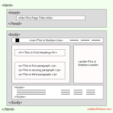

Semantic HTML gives meaning to your content, helping browsers, search engines, and screen readers understand your page better. It improves SEO, accessibility, and maintainability.

Figure 1: Semantic structure makes content meaningful.
Using tags like <header> and <article> helps replace unnecessary <div>s, making your HTML clean and structured.
Building a Blog Page with Pure HTML
- by Danish
You don't need CSS or JavaScript to structure a professional page. HTML alone gives you all the tools to create readable, organized layouts.
Understanding the <aside> Element
- by Danish
The <aside> tag is used for content that is related to the main article, such as author info, ads, or related links. It helps structure pages more meaningfully.